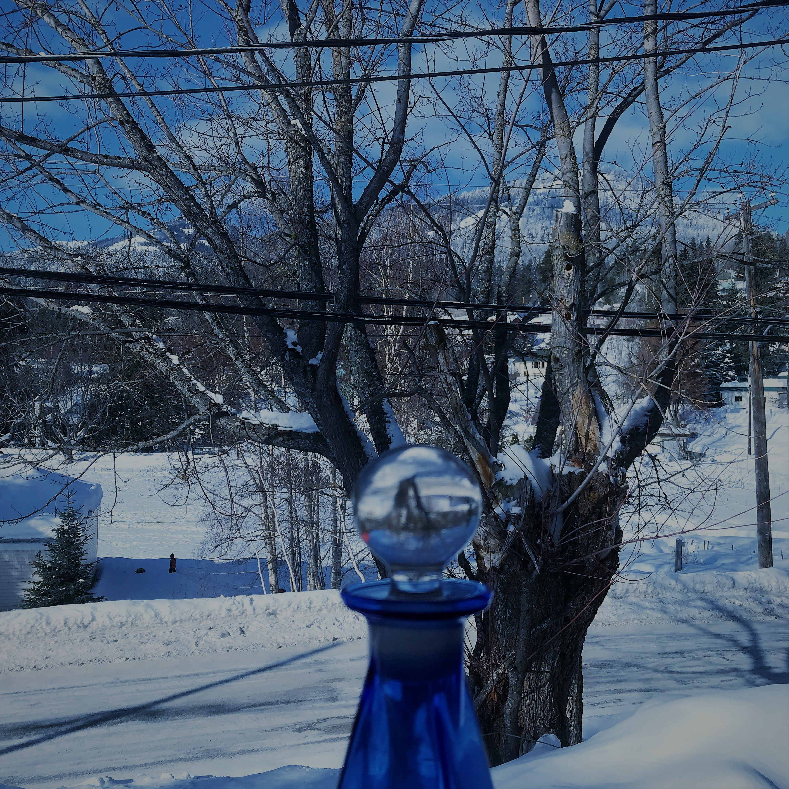

About Me
.JPG)
Born in a small mountainous city called Rossland in British Columbia. Growing up I was constantly surrounded by wilderness, mountains, rivers and beauty as far as the eye can see. From this I have become a very creative person. I would spend my time creating games with my brother, skiing, golfing, playing soccer, basketball, hiking and fishing. Since I was always encompassed in nature I found myself becoming passionate about creative projects. Naturally I was always talented with the principles of mathematics and was fascinated by physics. In the late 90’s early 2000’s technology and software were really taking off and of course within that I developed a lot of curiosity towards web and game design. After graduation I got offered an opportunity in Ontario and that started my journey in the direct marketing industry.

I grew up in a town where the population was 1500 and cities around didn't get much bigger than 30,000. When I moved to Kitchener Ontario it was a very different experience for me as to me it was, “A Big City”. My journey in direct marketing began and at first it definitely was one tough racket. After 2 months I started getting a little more confident, my numbers started getting more consistent. Then one week everything seemed to change. I had been studying sales techniques, psychology, human behaviour and it all just clicked. I met the requirements for team leader that week. Next week I almost broke the office record. From there I went on to teach others the things I had learned and ended up travelling all over southern Ontario. Visiting other offices I acted as a field manager, coaching new representatives how to bring in consistent numbers.
After being with the company for 2 years I ended up moving to another marketing firm that allowed me to travel all over Canada. I spent some time in New Brunswick, Nova Scotia, Saskatchewan, Northern Ontario, and really fell in love with the breathtaking landscape that stretches all across Canada. Through this journey I learned about sales, marketing, startups, interpersonal skills, management skills and more. After 4 years I started to realize even though I was good at it and enjoyed it, direct marketing was not what I wanted to do for the rest of my life. There was a period of time when I started feeling lost in the world and was unable to decide what my future should look like. One day it hit me, I decided I wanted to try learning the fundamentals of programming and see if it was something I could do. 2 months into learning my passion just became stronger and stronger. Although I'm no expert by any means yet, the passion has consistently increased over the last 2.5 years of teaching myself different languages, applications and theories.


When I am not working these days I spend most of my time coding or reading about software. My goal is to one day run a small development firm working on applications and mobile games. Recently my brother and I have been working on a mobile game that we are playing to release in the near future. To view some of my projects check out the projects tab and hope to work with you in the future.